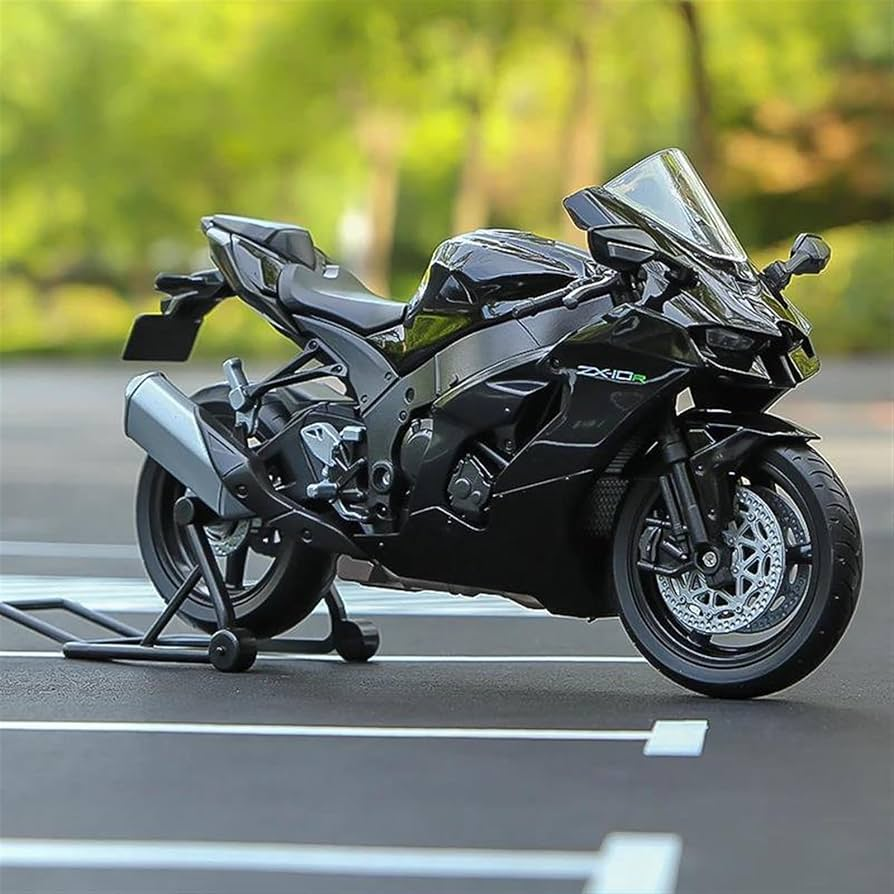
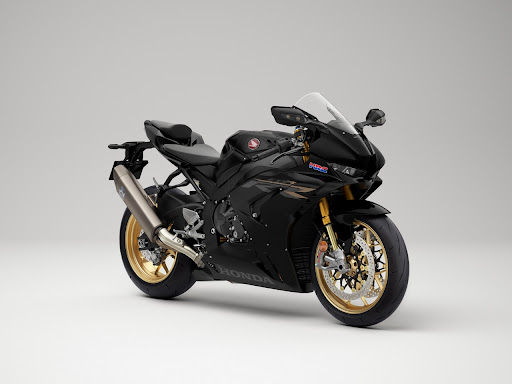
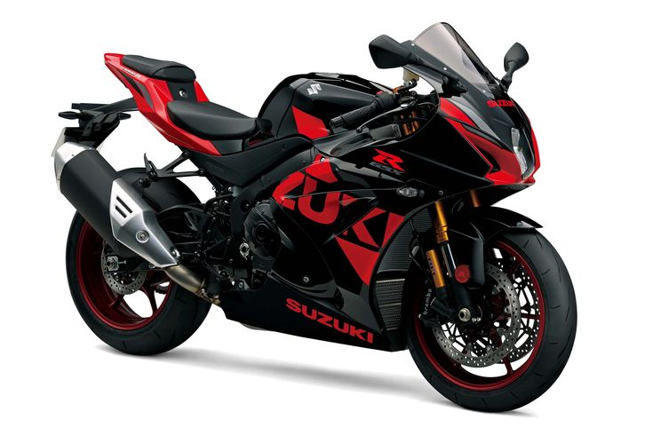
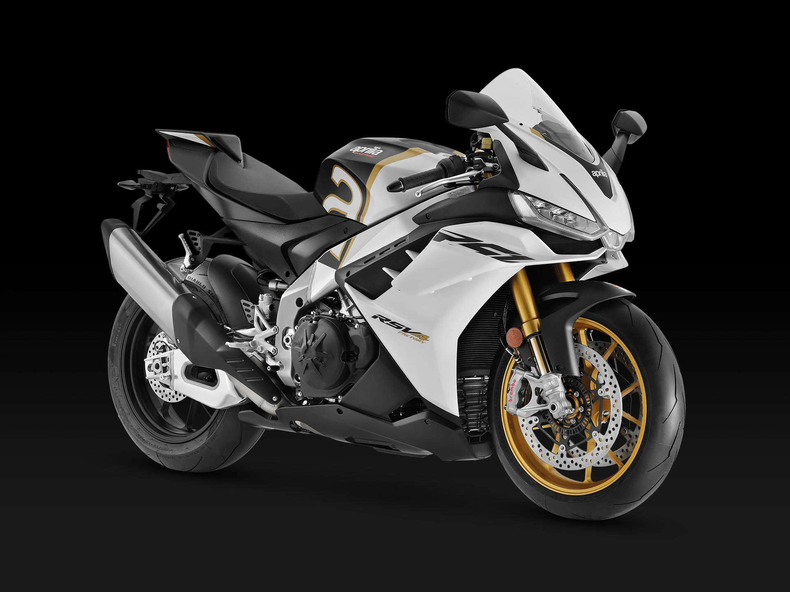
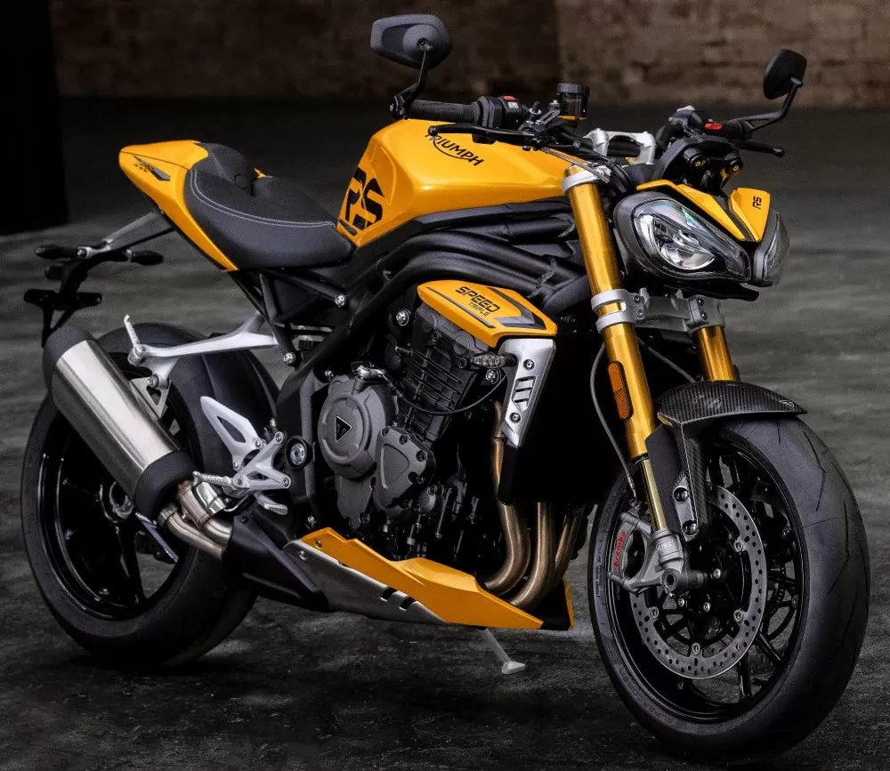

tp n°3
1- ¿Para qué sirve la etiqueta ul? Dar un ejemplo en donde lo utilizarías.
Si necesitas agregar una lista que solo tendrá viñetas, es decir, que no tiene que enumerarse
1.2- ¿Para qué sirve la etiqueta ol? Dar un ejemplo en donde lo utilizarías
se utiliza para indicar que los elementos de la lista deben aparecer en un orden específico y se mostrarán con
números o letras
1.3- ¿Para qué sirve la etiqueta dl? Dar un ejemplo en donde lo utilizarías
se utiliza para crear una lista de definición. Se usa junto con la etiqueta dt que crea el término y dd que
describe el término. Resultado: Automóvil
1.4- ¿Para qué sirve la etiqueta li? Dar un ejemplo en donde lo utilizarías
se utiliza para crear elementos de lista en un documento HTML
1.5- Crea una lista desordenada con tres elementos (li) que contengan nombres de países de América del Sur
nombres paises del sur:
- argentina
- brasil
- colombia
1.6- Crea una lista ordenada con cinco elementos (li) que contengan los días de la semana en orden alfabético
- lunes
- martes
- miercoles
- jueves
- viernes
1.7- Anida una lista desordenada dentro de otro elemento li de otra lista desordenada para crear una lista
anidada de frutas y verduras
listas de verduras:
- verduleria
- frutas:
- lechuga
- zanahoria
- tomate
- morron
- fruta:
- manzana
- pera
- frutilla
- ciruela
1.8-
- pelar y cortar las manzanas en rodajas finas
- mezclarla canela , el azucar y la harina en un
tazón
- colocarla masa de la tarta en un molde para horno
- colocarlas manzanas sobre la masa de la tarta
- hornear la tarta durante 45 minutos.
Existe un atributo que se aplica a la etiqueta ol para ver la lista en orden descendente en vez de ascendente,
¿cuál es ese atributo?
Indica si la lista debe ser mostrada en orden descendente en vez de ascendente
1.10- Utilizando el atributo anterior, crear una lista con cuatro elementos que contengan nombres de películas
de terror de forma descendente
- la masacre de texas
- el conjuro
- chucky
- siniestro
- cuando hasecha la maldad
1.11 Elegir un gusto particular y realizar una lista descriptiva de por lo menos 5 elementos. El título debe
tener un enlace que lleve a un sitio de referencia. Utilizar en las descripciones etiquetas: strong, em, img.
informacion
sobre las motos
- kawasaki zx10r
- La kawasaki Ninja ZX-10R es una motocicleta deportiva de la marca Kawasaki.
El equipo Kawasaki Racing
Team
utiliza la ZX-10R para el Campeonato Mundial de Superbikes.
La motocicleta es vendida al público y es
personalizable

- honda cbr1000rr
- La CBR1000RR es una motocicleta superdeportiva fabricada por Honda de 998 cc con cuatro cilindros en
línea y refrigeración líquida que fue introducida en 2004 para reemplazar a la CBR954RR

- suzuki gsxr1000
- La Suzuki GSX-R1000 es una motocicleta superdeportiva fabricada por Suzuki.
Se introdujo en 2001
para
reemplazar a la GSX-R1100 y funciona con un motor de cuatro tiempos,
cuatro cilindros en línea y 999
cc
refrigerado por líquido,
aunque originalmente era de 988 cc entre 2001 y 2004

- aprilia RSv4
- El nuevo motor Aprilia V4 en la RSV4 es un nuevo punto de referencia con sus 1078 cc
y su sonido
inimitable, inconfundible incluso en rutas abiertas.
Alcanza un valor máximo de 122 Nm a 11,000 rpm y
una potencia excepcional de 217 CV a 13.200 rpm

- triumph speed triple
- La Triumph Speed Triple es una serie de motocicletas producidas por Triumph Motorcycles. La Hinckley
Triumph de 1994 fue una de las primeras motocicletas producidas al estilo streetfighte
